Technical Index
The central repository for technical deep dives, perspectives, and peer-reviewed publications.
Direct Air Capture (DAC) Deep Dive
Direct Air Capture (DAC) Perspective
Marine Carbon Dioxide Removal (mCDR) Deep Dive
Peer-Reviewed Publications #
[24] Efficient acidic CO2 electrolysis with suppressed crossover in a separator-based membrane electrode assembly #
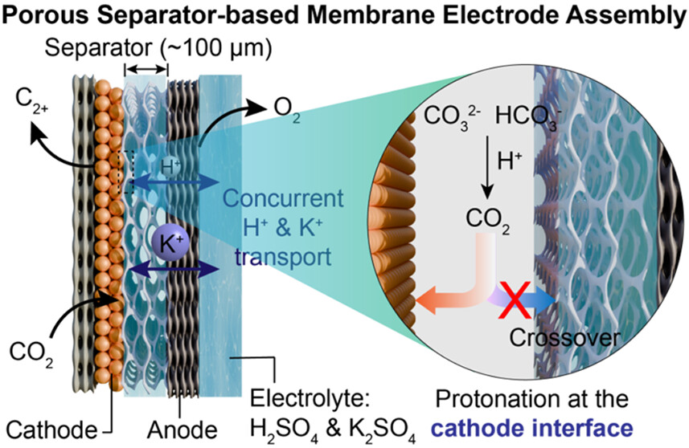
Liu et al., Journal of American Chemical Society, 2026
A zero-gap membrane electrode assembly incorporating an ∼100 μm electrolyte-filled hydrophilic porous separator regulates coupled H+ and K+ transport to promotes C2+ production while suppressing crossover.
[23] Solvent tuning regulates proton flux to extend stability in reactive CO2 capture and electrolysis #
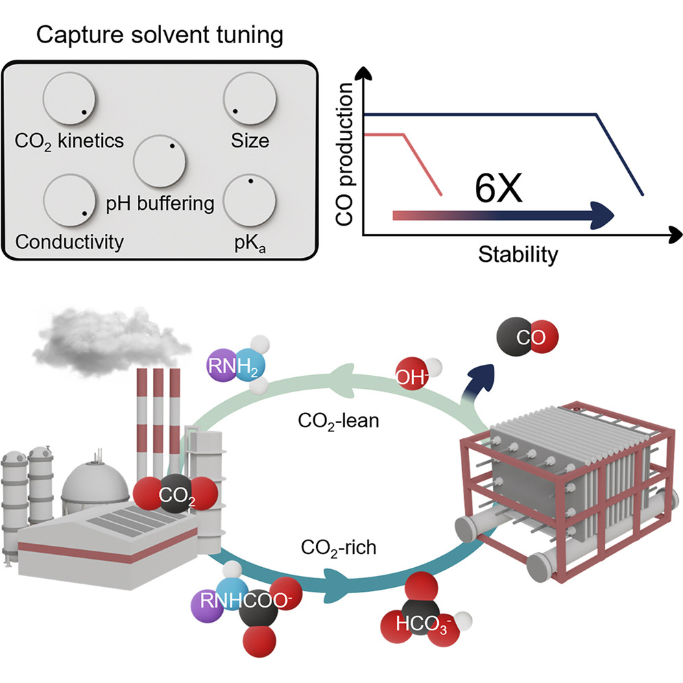
Xiao et al., Chem Catalysis, 2026
The degradation of amino-acid-based reactive CO2 capture was dominated by processes localized at the catalytic interface, where high proton flux accelerates catalyst decomposition. By regulating the cathode’s local pH through capture solvent tuning and operating parameter optimization, the stability was extended to over 75 hours at 100 mA cm−2 and over 250 hours at 50 mA cm−2. .
[22] Electrosynthesis of ethylene from syngas #
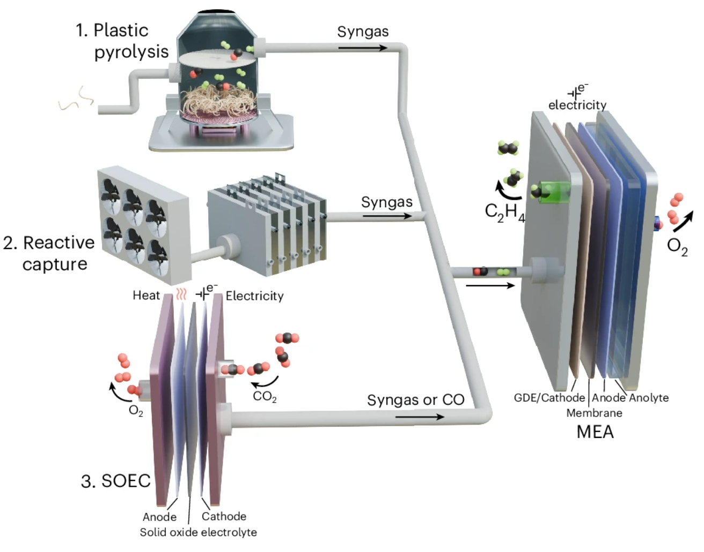
Li et al., Nature Sustainability, 2026
A COOH-functionalized active carbon material, which captures CO from syngas, strengthens CO adsorption on a copper cathode and enhances ethylene FE even under CO-diluted conditions.
[21] Industrial amine blends enable efficient CO electrosynthesis in reactive capture #
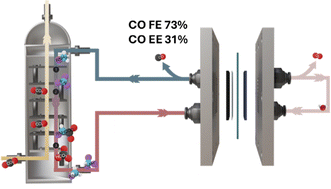
Sun et al., EES Catalysis, 2026
Optimizing solvents for reactive CO2 capture requires balancing high bicarbonate concentrations against the increased viscosity and resistance that can hinder CO2 transport and conversion.
[20] Accelerated discovery of CO2-to-C3-hydrocarbon electrocatalysts with human-in-the-loop #
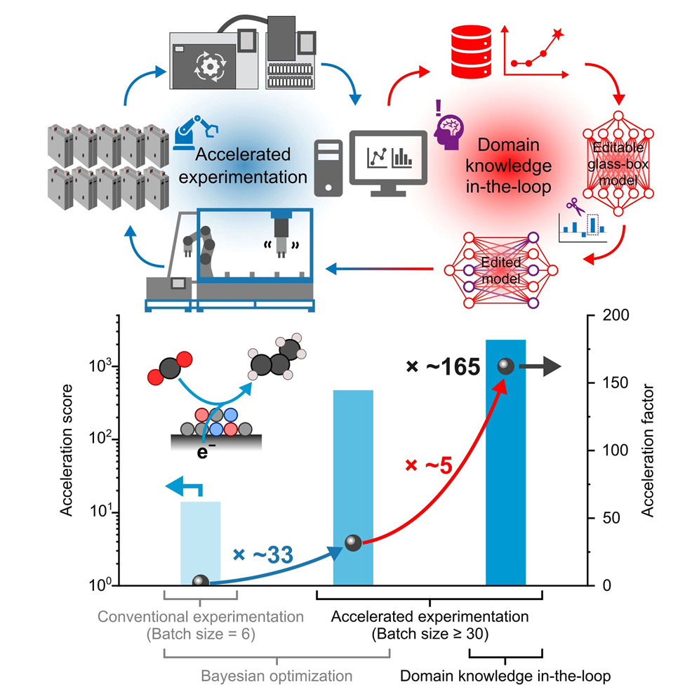
Kim et al., Joule, 2025
A machine learning algorithm that integrates human domain knowledge for real-time feature editing, coupled with an accelerated experimental platform, achieved a ~165× acceleration in discovering multi-element CO2 electrocatalysts.
[19] Efficient amino-acid-based reactive capture of CO2 via nickel molecular catalyst #
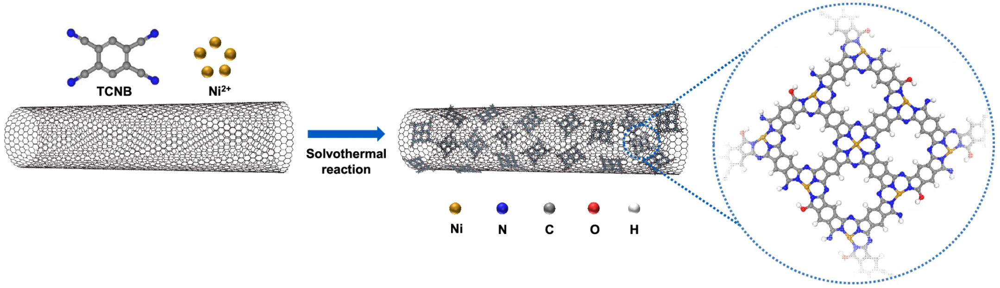
Guo et al., Nature Communications, 2025
A nickel molecular catalyst supported on carbon nanotubes with a conjugated NiPc framework resists amino acid adsorption and promotes CO2 adsorption to enhances CO selectivity in a reactive capture system.
[18] CO electrolysers with 51% energy efficiency towards C2+ using porous separators #
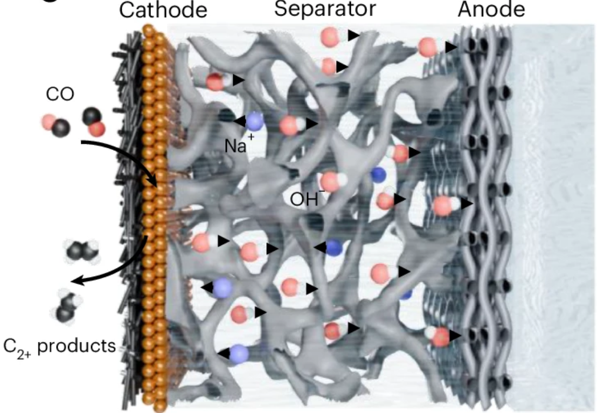
Miao et al., Nature Energy, 2025
An uncharged porous separator enables facile transport of both ion types, reducing ohmic resistance and superconcentrating cations at the catalyst surface, leading to a full-cell voltage of 1.95 V at 200 mA cm−2 and an energy efficiency of 51% to C2+ products sustained over 250 hours.
[17] High-nuclearity copper molecular catalysts for electrocatalytic CO-to-acetate conversion #
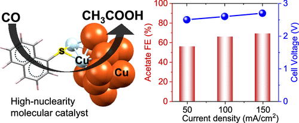
Bodiuzzaman et al., Journal of the American Chemical Society, 2025
Efficient electrosynthesis of acetate via CO electroreduction on Cu NC-based catalysts enabled by tuning the local hydrophobicity through ligand adjustment, and balancing the ligand coverage and active site exposure.
[16] Scaled CO electroreduction to alcohols #
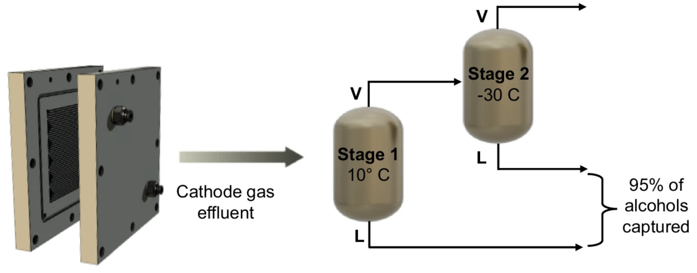
Papangelakis et al., Nature Communications, 2025
An 800 cm2 CO electrolyzer yielded 200 mL of alcohol/day by reversing water’s electroosmotic drag via a cation exchange membrane assembly and employing a multi-step condenser.
[15] A redox-active polymeric network facilitates electrified reactive-capture electrosynthesis to multi-carbon products from dilute CO2-containing streams #
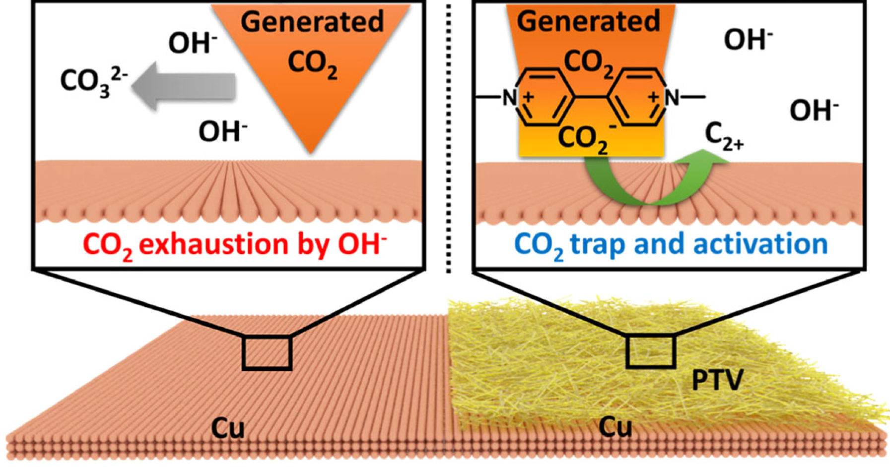
Zhang et al., Nature Communications, 2025
A redox-active polymeric network whose polymer fragments undergo reversible reduction during the electrochemical conversion process, enables electron transfer to CO2 molecules generated in-situ from carbonate capture liquid.
[14] Rapid screening of CO2 capture fluids #
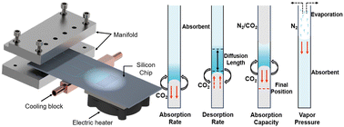
Guo et al., Lab on a Chip, 2025
A microfluidic approach paired with automated image processing and density functional theory simulations that enables comprehensive rapid screening of CO2 capture fluids.
[13] Scalability and stability in CO2 reduction via tomography-guided system design #
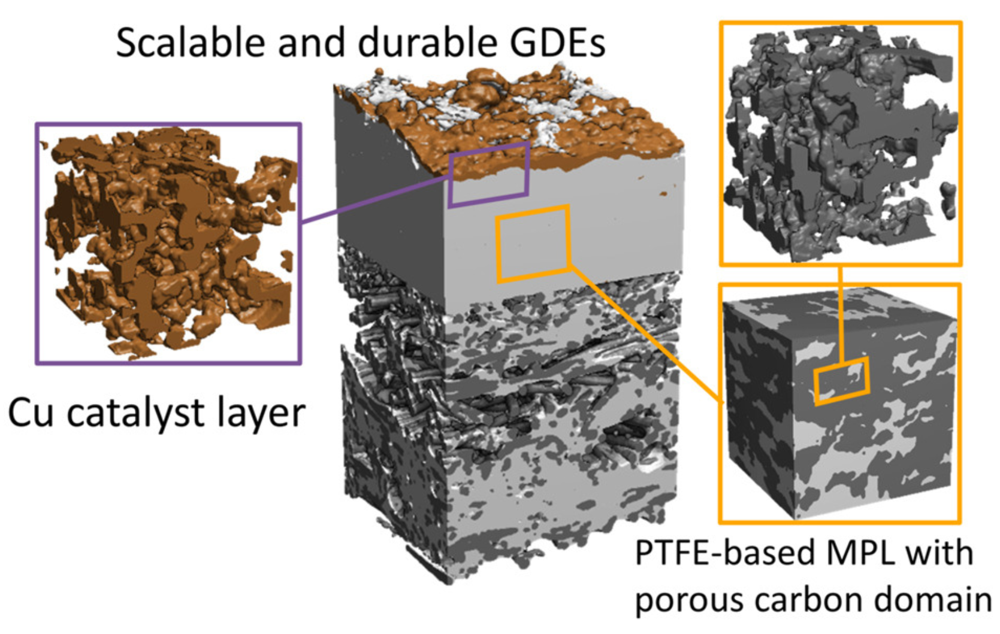
O'Brien et al., Joule, 2024
A GDE architecture that is resistant to flooding and maintains stable CO2 electrolysis performance for >400 hours due to a percolating network of polytetrafluoroethylene in the microporous layer that retains hydrophobicity.
[12] Reactive capture of CO2 via amino acid #
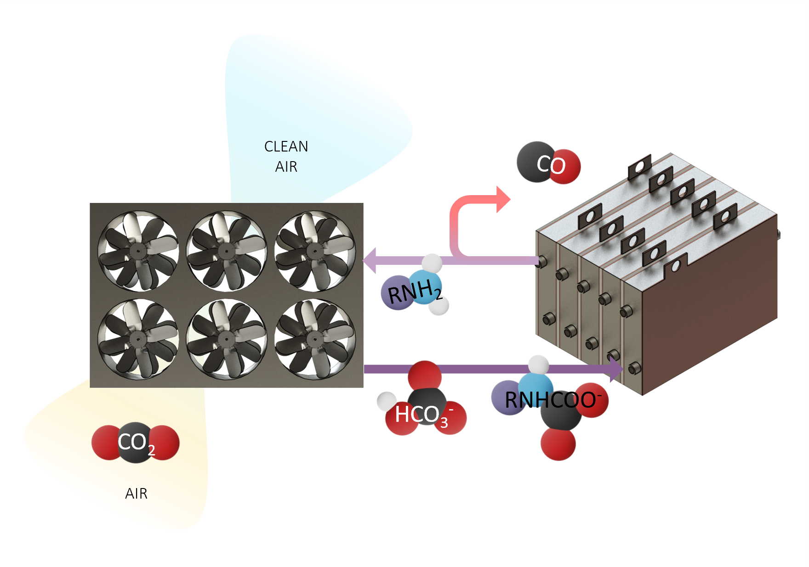
Xiao et al., Nature Communications, 2024
An amino-acid-based reactive CO2 capture system increased CO selectivity by employing a single-atom catalyst, engineering the capture solution, and elevating the operating temperature and pressure to the increase the availability of in-situ CO2.
[11] Improving the SO2 tolerance of CO2 reduction electrocatalysts using a polymer/catalyst/ionomer heterojunction design #
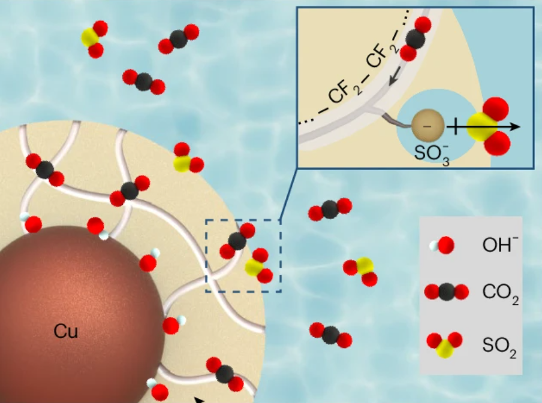
Papangelakis et al., Nature Energy, 2024
A polymer/catalyst/ionomer heterojunction design with combined hydrophobic and highly charged hydrophilic domains that diminish hydrogen adsorption and promote CO2 over SO2 transport.
[10] Direct air capture of CO2 via cyclic viologen electrocatalysis #
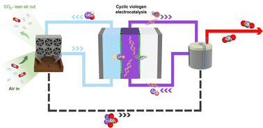
Liu et al., Energy & Environmental Science, 2024
An electrochemical process to regenerate hydroxide absorbents via cyclic viologen electrocatalysis by isolating the redox-active viologens to avoid oxidative degradation and vaporization loss, and tuning the viologen substituent to facilitate fast reaction kinetics.
[9] Scale-dependent techno-economic analysis of CO2 capture and electroreduction to ethylene #
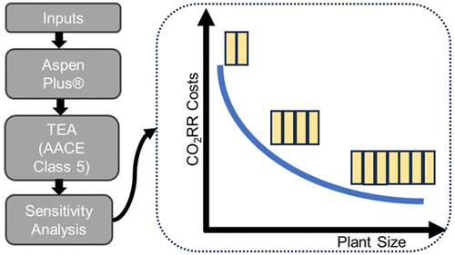
Alerte et al., ACS Sustainable Chemistry & Engineering, 2023
A techno-economic assessment of electrochemically converting CO2 from an industrial point source to polymer-grade ethylene using industrially mature upstream and downstream separation technologies in an Aspen Plus model.
[8] Electrified cement production via anion-mediated electrochemical calcium extraction #
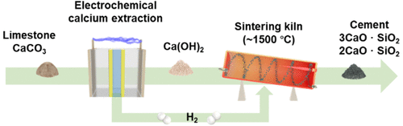
Miao et al., ACS Energy Letters, 2023
Electrochemical cement production based on anion-mediated electrochemical calcium extraction that uses situ-generated acidic electrolytes to release the feedstock CO2 emissions as a high-purity gas stream.
[7] Regeneration of direct air CO2 capture liquid via alternating electrocatalysis #
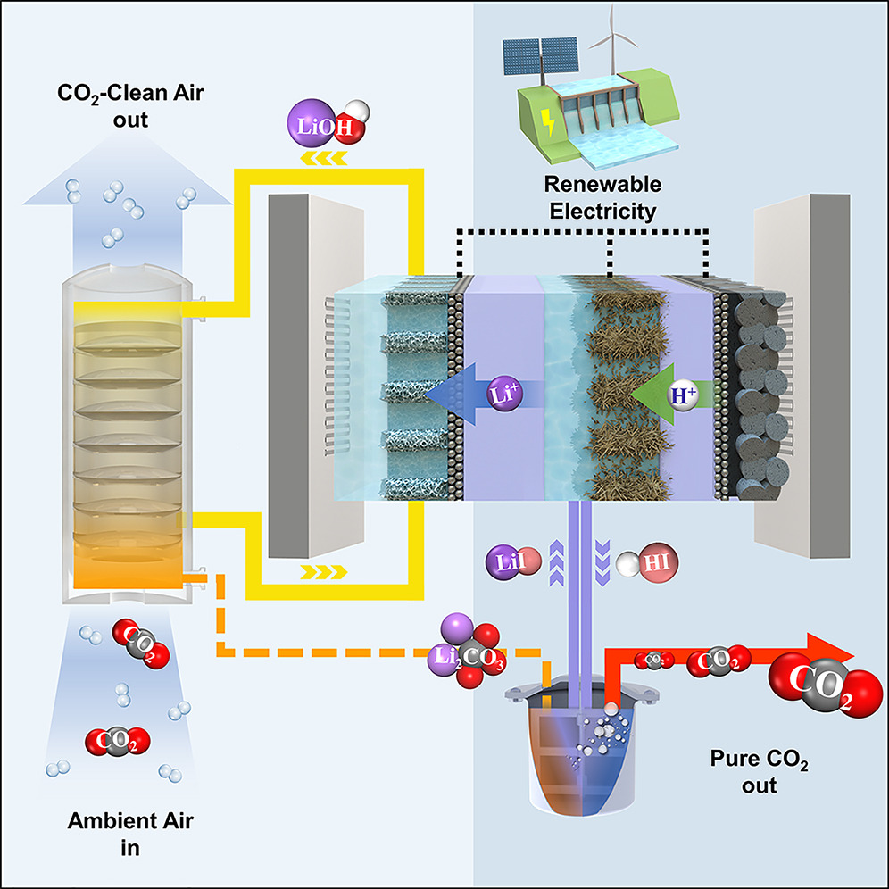
Xu et al., Joule, 2023
A low-temperature electrochemical process to regenerate alkaline capture liquids via alternating electrocatalysis by colocating oxidation and reduction reactions on a single electrode and cycling between electrolyzer and fuel cell modes.
[6] Cationic-group-functionalized electrocatalysts enable stable acidic CO2 electrolysis #
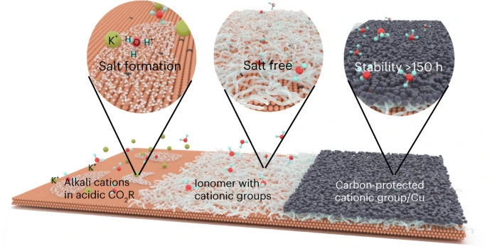
Fan et al., Nature Catalysis, 2023
A copper catalyst functionalized with immobilized benzimidazolium cationic groups enable efficient CO2 activation and over 150 hours of stable CO2 electrolysis under acidic conditions.
[5] CO2 electroreduction to multicarbon products from carbonate capture liquid #
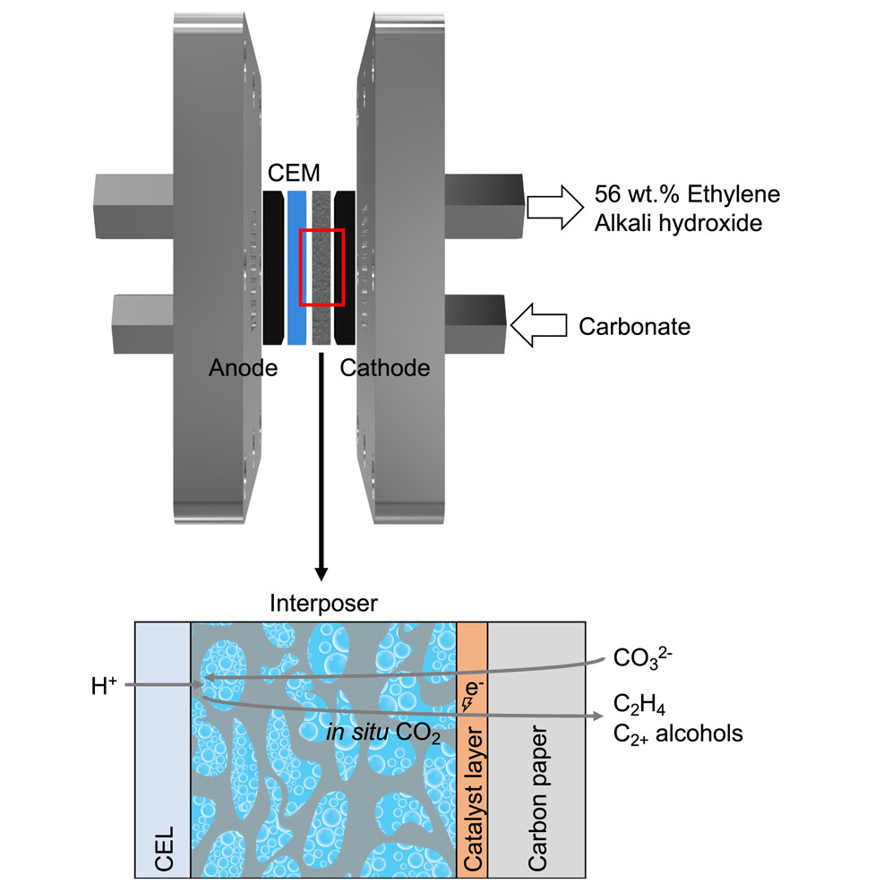
Lee et al., Joule, 2023
Direct electrochemical conversion of CO2, captured in the form of carbonate, into multicarbon (C2+) products using an interposer and a Cu/CoPc-CNTs electrocatalyst.
[4] Single-site decorated copper enables energy- and carbon-efficient CO2 methanation in acidic conditions #
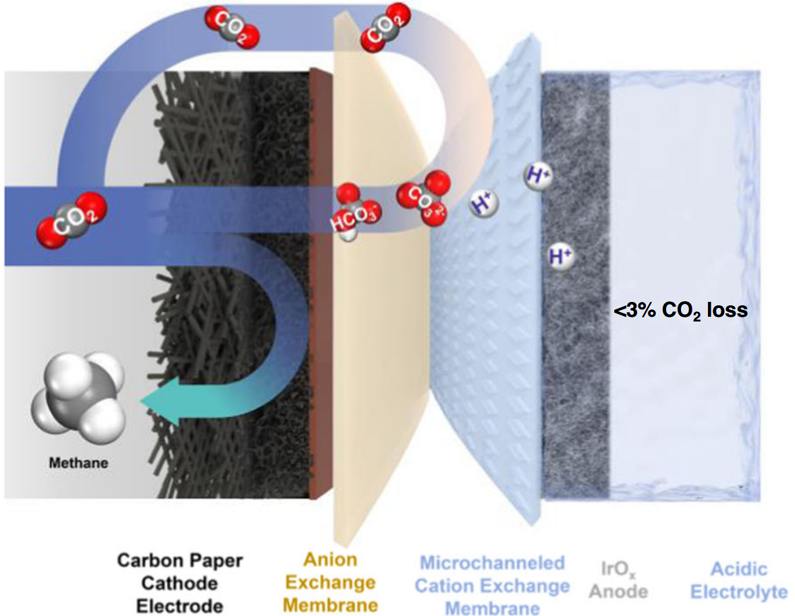
Fan et al., Nature Communications, 2023
Hexadentate donor sites in ethylenediaminetetraacetic acid enable the chelation of Cu ions, regulating Cu cluster size and forming Cu-N/O single sites that achieve high CH4 selectivity in acidic CO2 electrolysis.
[3] Pilot-scale CO2 electrolysis enables a semi-empirical electrolyzer model #
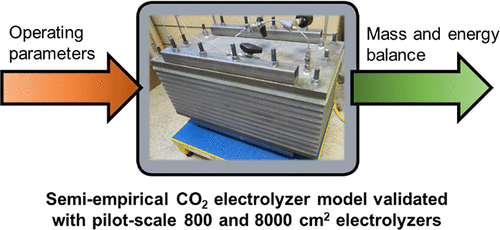
Edwards et al., ACS Energy Letters, 2023
A semi-empirical electrolyzer model built in Aspen Custom Modeler, trained on a 5 cm2 lab-scale CO2 electrolyzer and validated with data from a pilot-scale 800 cm2 single cell and a 10 × 800 cm2 stack.
[2] Direct carbonate electrolysis into pure syngas #
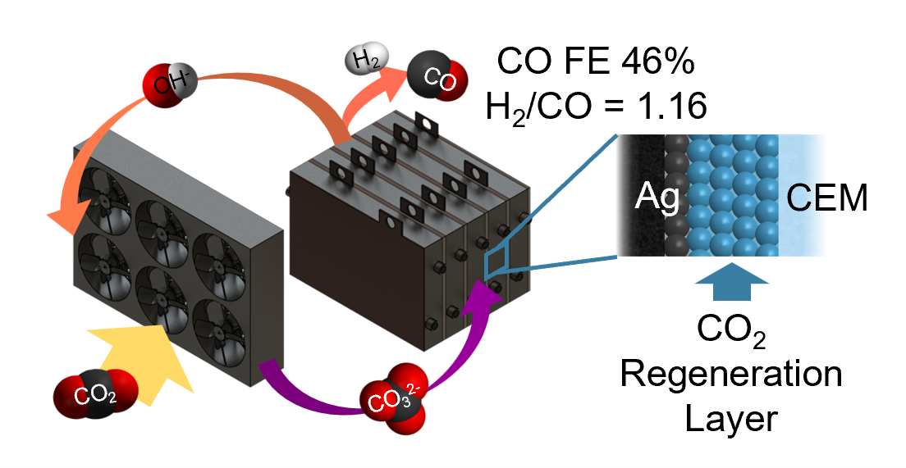
Xiao et al., EES Catalysis, 2023
A composite CO2 diffusion layer attains high CO selectivity by achieving high alkalinity and in-situ CO2 concentration at the cathode of a reactive CO2 capture electrolyzer.
[1] High-throughput parallelized testing of membrane electrode assemblies of CO2 reduction #
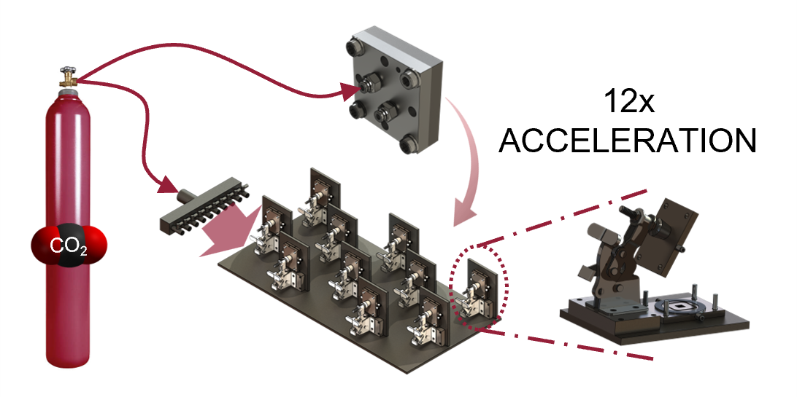
Kose et al., Catalysis Science & Technology, 2022
An accelerated, parallelized membrane electrode assembly testing system that enables uniform compression, improving repeatability and reliability.